Experience Design @ IBM
Creating web UI for IBM's Information Management System (IMS) tools
The Challenge
How might we transform IBM's IMS mainframe setup and verification — a process that currently only exists as "green screen" terminals — into an intuitive, visual experience that meets the needs of both experienced and inexperienced system programmers?
What is IMS?
IBM's Information Management System (IMS) is a high-performance database and transaction manager running on mainframe computers. Originally developed to track rocket parts for NASA's Apollo program, IMS today powers millions of transactions and tasks for large banks, insurance companies, and retailers daily.
What is the IVP?
When an IMS is newly installed or updated, an Installation Verification Program (IVP) runs a series of tests to confirm the system — the database/transaction manager — is configured and functioning properly.
On day one at IBM, I learned the IVP flow had remained essentially unchanged since IMS's development in the 1960s. With IBM investing in IMS modernization, my co-intern and I were tasked with giving the IVP a well-deserved makeover — refreshing the process from keyboard-driven and text-only to visually modern.
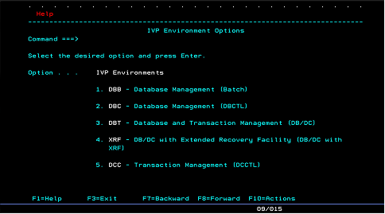
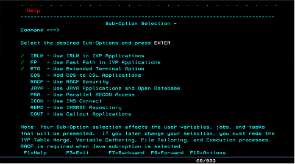
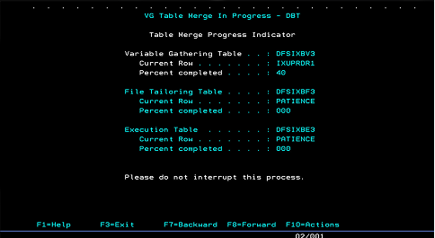
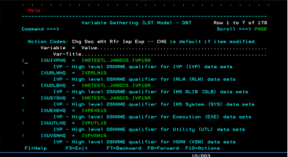
Mapping the User Journey
Before beginning the redesign, we broke the IVP down into a digestible flow with the help of experienced system programmers. Looking at the process with fresh eyes — paired with their years of experience — helped us identify nearly every potential improvement to the UI.
Currently, IVP has four main phases:
- Initialization — select initial parameters
- Variable Gathering — define variables and settings for the parameters
- File Sorting — place the variables into job templates
- Execution — run the created jobs
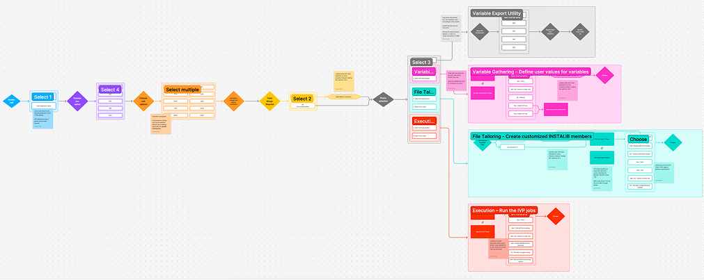
Iteration #1 — Manual Translation
Initially, our focus was modernizing the UI of the existing IVP. To get comfortable visualizing IVP components in web UI, we created a page-by-page "translation" of the legacy IVP using the mapped flow and existing green screens, built with IBM's Carbon Design System.
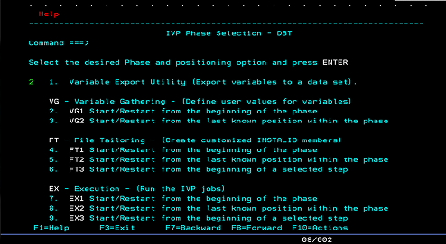
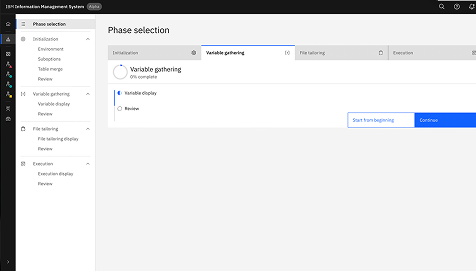
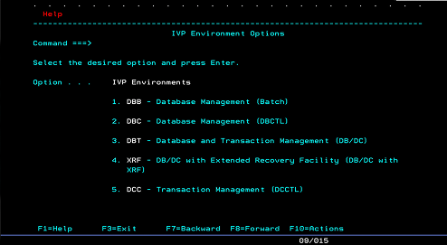
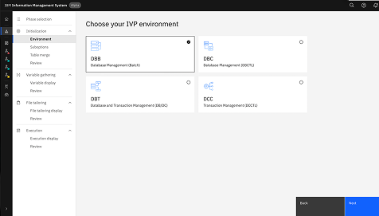
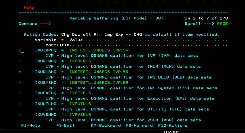
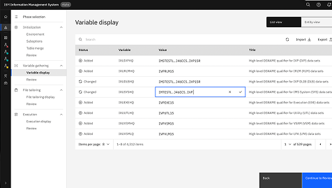
Client Demo Feedback
After a few demo sessions and a "temperature check" with the IMS client, we surfaced key pain points in both the current IVP and our first iteration: the UI transition learning curve, a lack of process guidance, and the fact that the IVP was rarely even used. These pain points shaped an entirely new direction for the following iterations.
Iterations #2 and #3 — Configuration as Code
While iteration #1 tackled the UI challenge of turning a completely text-based process into a visual experience, it didn't fully address the function and guidance of IVP setup — especially given the new learning curve that comes with a transition to web UI.
To take on that challenge, we partnered with another team already developing Configuration as Code — a YAML file containing the parameter names that could be seamlessly and instantly generated into ready-to-run jobs.
With Configuration as Code, the process now starts with YAML import/discovery, moves to editing the parameters, and ends with running the jobs as before — less manual entry, more reusable templates, and support for a wider range of functions, from system testing to IMS version migration.
Final Designs
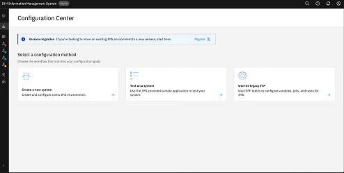
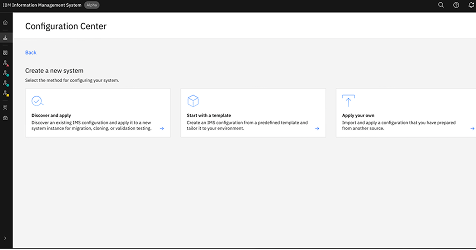
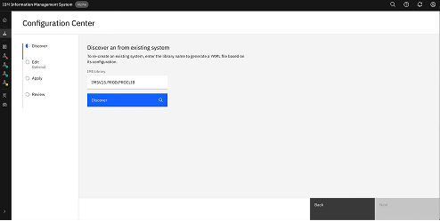
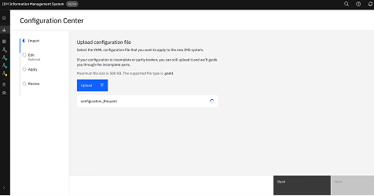
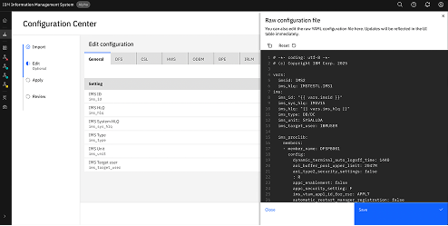
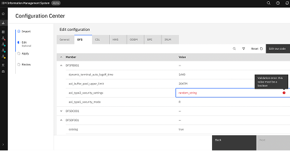
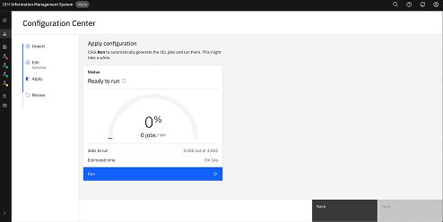
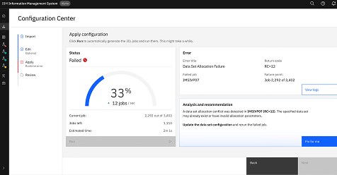
Learnings and Reflections
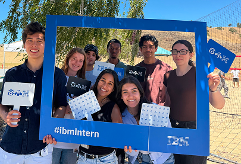
IMS is an extremely technical product, and approaching it with a friendly, design-driven lens was initially intimidating — it meant reading through pages of documentation just to understand the existing setup process.
Throughout my twelve weeks at IBM, I learned the most valuable resources were often just a few desks over (or a Teams DM away). Working with experienced systems engineers and design mentors showed me that the best insights come from careful, iterative conversation — especially when the change is as large as a leap to web UI.
My favorite part of this project was getting to work inside a thoughtfully built design system, seeing real clients of IMS, and contributing to the well-crafted Carbon Design System along the way.